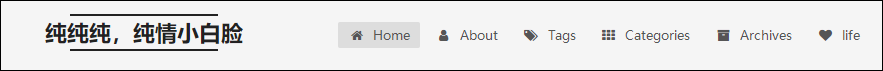

# URL ## If your site is put in a subdirectory, set url as 'http://yoursite.com/child' and root as '/child/' url: http://rosesnow.top #你的站点Url root: / #站点的根目录 permalink: :year/:month/:day/:title/ #文章的 永久链接 格式 permalink_defaults: #永久链接中各部分的默认值
# Category & Tag default_category: uncategorized category_map: #分类别名 tag_map: #标签别名
# Date / Time format ## Hexo uses Moment.js to parse and display date ## You can customize the date format as defined in ## http://momentjs.com/docs/#/displaying/format/ date_format: YYYY-MM-DD #日期格式 time_format: HH:mm:ss #时间格式
# Pagination ## Set per_page to 0 to disable pagination per_page: 10 #分页数量 pagination_dir: page
# Set default keywords (Use a comma to separate) keywords: # 这里放置站点的关键字 "前端, HTML, CSS, javascript, Vue.js, Node.js, MySQL, 微信小程序"
# Set rss to false to disable feed link. # Leave rss as empty to use site's feed link. # Set rss to specific value if you have burned your feed already. rss:
footer: # 网站的页脚设置 # Specify the date when the site was setup. # If not defined, current year will be used. since: # 网站的开始运行时间 比如设置2017 则网站底部显示 2017-2018
# Icon between year and copyright info. icon: user
# If not defined, will be used `author` from Hexo main config. # copyright: # ------------------------------------------------------------- # Hexo link (Powered by Hexo). # powered: true
# theme: # Theme & scheme info link (Theme - NexT.scheme). # enable: false # Version info of NexT after scheme info (vX.X.X). # version false # ------------------------------------------------------------- # Any custom text can be defined here. #custom_text: Hosted by <a target="_blank" href="https://pages.github.com">GitHub Pages</a>
# --------------------------------------------------------------- # SEO Settings # ---------------------------------------------------------------
# Canonical, set a canonical link tag in your hexo, you could use it for your SEO of blog. # See: https://support.google.com/webmasters/answer/139066 # Tips: Before you open this tag, remember set up your URL in hexo _config.yml ( ex. url: http://yourdomain.com ) canonical: true
# Change headers hierarchy on site-subtitle (will be main site description) and on all post/pages titles for better SEO-optimization. seo: false
# If true, will add site-subtitle to index page, added in main hexo config. # subtitle: Subtitle index_with_subtitle: false
# --------------------------------------------------------------- # Menu Settings # ---------------------------------------------------------------
# When running the site in a subdirectory (e.g. domain.tld/blog), remove the leading slash from link value (/archives -> archives). # Usage: `Key: /link/ || icon` # Key is the name of menu item. If translate for this menu will find in languages - this translate will be loaded; if not - Key name will be used. Key is case-senstive. # Value before `||` delimeter is the target link. # Value after `||` delimeter is the name of FontAwesome icon. If icon (with or without delimeter) is not specified, question icon will be loaded. menu: # 菜单路径 注意：下边的 || 不能去掉 后边表示的是 对应的图标 home: / || home # 表示主页 tags: /tags/ || tags # 表示标签 categories: /categories/ || th # 表示分类 archives: /archives/ || archive #表示归档 about: /about/ || user #表示关于我 life: /life/ || heart #schedule: /schedule/ || calendar #sitemap: /sitemap.xml || sitemap #commonweal: /404/ || heartbeat # 公益活动
# Enable/Disable menu icons. menu_icons: # 这里是图标设置 和上边的 || 后面的一致 enable: true home: home tags: tags categories: th archives: archive about: user life: heart
# Social Links. # Usage: `Key: permalink || icon` # Key is the link label showing to end users. # Value before `||` delimeter is the target permalink. # Value after `||` delimeter is the name of FontAwesome icon. If icon (with or without delimeter) is not specified, globe icon will be loaded. social: # 自己的社交链接 比如这里我设置了 Github 和 邮箱，下面还可以设置 微博之类的 自己动手设置试试 GitHub: https://github.com/RoseSnow || github E-Mail: number_nine@126.com || envelope #Google: https://plus.google.com/yourname || google #Twitter: https://twitter.com/yourname || twitter #FB Page: https://www.facebook.com/yourname || facebook #VK Group: https://vk.com/yourname || vk #StackOverflow: https://stackoverflow.com/yourname || stack-overflow #YouTube: https://youtube.com/yourname || youtube #Instagram: https://instagram.com/yourname || instagram #Skype: skype:yourname?call|chat || skype
# Sidebar Avatar # in theme directory(source/images): /images/avatar.gif # in site directory(source/uploads): /uploads/avatar.gif avatar: /images/avatar.jpg # 这里设置自己的头像
# Table Of Contents in the Sidebar # 文章自动显示的目录 toc: enable: true
# Automatically add list number to toc. 文章是否显示序号，显示则设置为true number: false
# If true, all words will placed on next lines if header width longer then sidebar width. wrap: false
# Creative Commons 4.0 International License. # http://creativecommons.org/ # Available: by | by-nc | by-nc-nd | by-nc-sa | by-nd | by-sa | zero #creative_commons: by-nc-sa #creative_commons:
sidebar: # Sidebar Position, available value: left | right (only for Pisces | Gemini). position: left #position: right
# Sidebar Display, available value (only for Muse | Mist): # - post expand on posts automatically. Default. # - always expand for all pages automatically # - hide expand only when click on the sidebar toggle icon. # - remove Totally remove sidebar including sidebar toggle. display: post #display: always #display: hide #display: remove
# Sidebar offset from top menubar in pixels (only for Pisces | Gemini). offset: 12
# Back to top in sidebar (only for Pisces | Gemini). b2t: false
# Scroll percent label in b2t button. scrollpercent: false
# Enable sidebar on narrow view (only for Muse | Mist). onmobile: false
# --------------------------------------------------------------- # Post Settings # ---------------------------------------------------------------
# Automatically scroll page to section which is under <!-- more --> mark. scroll_to_more: true
# Automatically saving scroll position on each post/page in cookies. save_scroll: false
# Automatically excerpt description in homepage as preamble text. excerpt_description: true
# Automatically Excerpt. Not recommend. # Please use <!-- more --> in the post to control excerpt accurately. auto_excerpt: enable: true length: 120
# Post meta display settings post_meta: item_text: true created_at: true updated_at: false categories: true
# Reduce padding / margin indents on devices with narrow width. mobile_layout_economy: false
# Android Chrome header panel color ($black-deep). android_chrome_color: "#222"
# Custom Logo. # !!Only available for Default Scheme currently. # Options: # enabled: [true/false] - Replace with specific image # image: url-of-image - Images's url custom_logo: enabled: false image:
# Code Highlight theme # Available value: # normal | night | night eighties | night blue | night bright # https://github.com/chriskempson/tomorrow-theme highlight_theme: night eighties
创建其他页面
首页和归档是默认存在的，不需要我们自己创建，但是其他的几个诸如分类，标签，关于是要自己创建的，如图

1.创建分类：终端myblog根目录下键入命令hexo new page categories之后我们进入myblog/source目录下发现多出一个名为categories的文件夹, 打开categories下的index.md,可以看到是这样的 如图